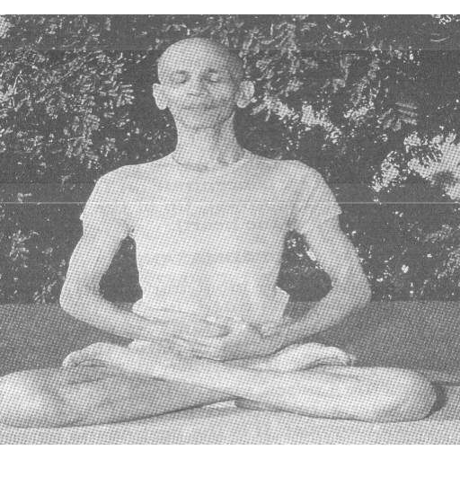
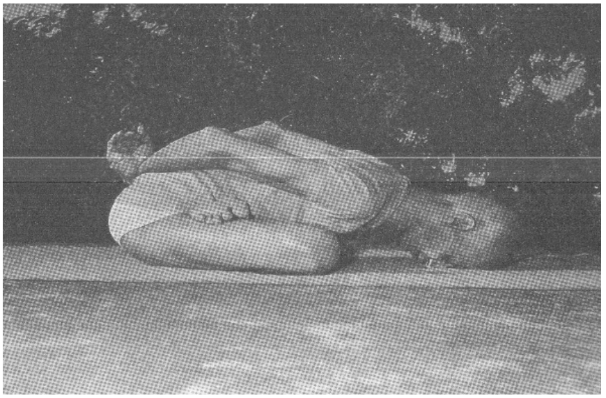

夜の修行
21:30 ゾーン ── 22:40 就寝
「夜の実践は昼より強力 ── 夜は心が静かで世界から自由だから」── Japa Yoga ／ 「就寝時に神を思え」── 20の精神的指示 第20条
前提 夜の三原則
| 一 | 上げない・沈める | 逆転（頭立ち・肩立ち・鋤）は夜から外す（2026-10-05本人実測）。強い呼吸（バストリカー等）も夜は禁じ物 ── 火を起こす道具は朝のもの |
| 二 | 食後を離す | 夕食後、実践は離してから。21:30-22:10が燃えない時間帯 |
| 三 | 蓮華を解かず通す | マットの上で座ったまま一連完結。眠気が来たらそのまま横になる |
日中からの引き継ぎ 漏らさなかったものを返す
| ・ | 讃えの記録 | 日中に口にした「何と素晴らしい」の数だけ、夜の感謝瞑想の返先がある |
| ・ | 回想の材料 | 昼の小座・心唱・言葉の制 ── 夜の回想で「なぜ？」を問う |
肩回し＋ゆるやかな腕振り軽い身体運動
蓮華に入る前の2分。肩を回し、腕を前後左右にゆるやかに振る（呼吸に合わせ・心唱しながら）。昼の滞りを散らす ── 「軽い身体運動を定期的に」の規定
2分
蓮華の山のポーズPARVATASANA
蓮華のまま両手を頭上で組み天を押す。10呼吸×2回。背骨を伸ばし、沈んだ気を整える
2分
ヨガ・ムドラーYOGA MUDRA
後ろ合掌のまま前に倒れる。10呼吸×2回。内臓を静かに圧し、心を内向させる
3分
蓮華の魚のポーズMATSYASANA（蓮華形）
蓮華のまま仰向けに倒れて胸を開く。10呼吸。喉が開く ── 言葉の業を「開いて」流す座
2分
軽い止息の呼吸法スクハ・プールヴァカ温和形
6〜10回。夜は1:2:1.5程度に短く ── 止息は快く、決して苦しくしない。目的は「心を一点に寄せる支度」であって鍛錬ではない。鍛錬は朝が全部受け持つ
5分
トラータカ（炎の凝視）TRATAKA
ダルマローソクの炎＋6聖者写真を後ろに。柔らかく凝視・まばたきは自然に止めない → 炎が消えたら残像を眉間へ。赤み・乾き・頭痛は短縮/隔日。一か月続けて記録せよ
10分
回想（内省）20指示・夕方の回想
今日の行いを朝から順に。何を・どう・なぜ。「なぜ？」を問え。日記1行 ── 「本日の御業」欄に讃えを一つ書き添える
5分
感謝の瞑想ジャパ続行 → 讃え
御名を108心唱し、そのまま今日の恵みを一つずつ神に返す。「何と慈悲深い」のささやきから沈み、御名だけが残れば ── そのまま床へ
15-20分
委ねの一言・就寝サラナーガティ
「委ねます」の一言。数珠は枕の下 ── 目覚めたらすぐ唱えられるように。蓮華を解いてごろりと横になり、そのまま眠ってよい
22:40

蓮華座
全工程この座で
呼吸法・瞑想の座

ヨガ・ムドラー
10呼吸×2
心を内向させる

蓮華の魚
10呼吸
胸と喉を開く

長座の前屈（任意）
10呼吸
気を横に置く